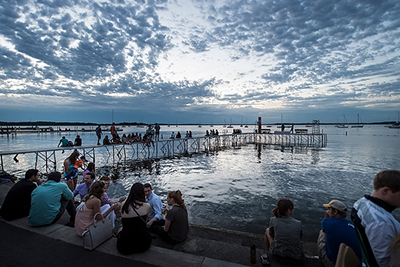

ABOUT THE UW
For 168 years, this campus has been a catalyst for the extraordinary. As a public land-grant university and prolific research institution, our students and faculty members partake in a world-class education and solve real-world problems. We’ve changed the way the nation takes its vitamins and brought flamingos to Bascom Hill. We’ve inspired satirists and senators alike. We’ve fearlessly sifted and winnowed to find today’s truths. And with the Wisconsin Idea as our guiding principle, we’re not only changing the 936 acres we call home—Badgers are also creating a better future for Wisconsin, the nation, and the world.
QUICK FACTS
1848
YEAR FOUNDED
$1B
IN RESEARCH EXPENDITURES ANNUALLY
33
PULITZER PRIZE WINNERS
MADISON, WISCONSIN

7 REASONS WHY MADISON, WISCONSIN, IS THE BEST PLACE TO LIVE IN AMERICA Business Insider
BIKES, BREWS, BURGERS AND A B&B New York Times Frugal Traveler
IN MADISON, WISCONSIN, CHILL OUT ON A TERRACE BY THE LAKE Dallas Morning News
AN ACTUALLY USEFUL GUIDE TO MADISON, WISCONSIN Bon Appetit